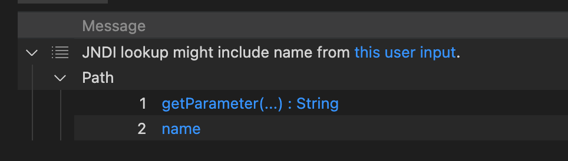
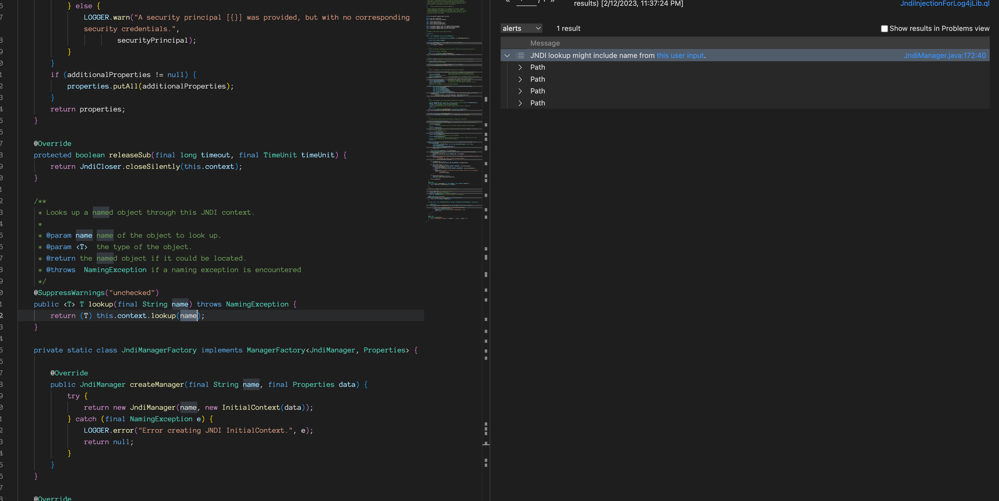
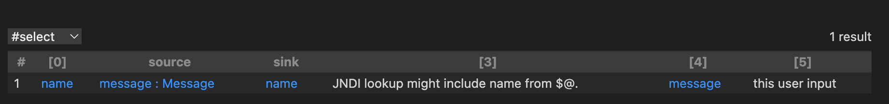

使用CodeQL发现Log4j CVE-2021-44228
虽然已经有了一个针对”Potential Log4J LDAP JNDI injection (CVE-2021-44228)”的实验性CWE-020 Query，但这次我想改写CWE-074，使其能够发现CVE-2021-44228。
引入
众所周知，Log4j是由受用户控制的JNDI lookup引起的。从文档中，我发现CodeQL Query帮助已经涵盖了它，它的CWE编号是CWE-074。以下是该文档链接: JNDI lookup with user-controlled name
让我们一起学习这个CWE，尝试使用它来查找Log4j CVE-2021-44228漏洞
在本文中，有一些CodeQL专有的术语，我不会将它们转换为中文，但在这里解释一下它们的含义。你也可以在官方的术语库中查阅
- predicate - 类似普通开发语言的函数
- source - 类似于起点
- sink - 类似于终点
- query - 类似SQL的query，也类似脚本语言中的脚本
解读 CWE-074
CWE-074代码: https://github.com/github/codeql/blob/main/java/ql/src/Security/CWE/CWE-074/JndiInjection.ql
正如我们所看到的，它将大部分代码封装到了semmle.code.java.security.JndiInjectionQuery中
通过代码中的注释，我们可以知道这个库被用来提供污点跟踪配置，以用于JNDI注入的Query。
在其中，我们可以发现它需要以下4个库：
semmle.code.java.dataflow.FlowSources- 提供了表示污点跟踪各种数据来源的类和predicate
- 这是CodeQL的基本库
semmle.code.java.frameworks.Jndi- 提供了用于操作Java JNDI API的类和predicate。
semmle.code.java.frameworks.SpringLdap- 提供了用于操作Spring LDAP API的类和predicate
semmle.code.java.security.JndiInjection- 提供了用于分析JNDI注入漏洞的类和predicate
- 这个对我们很重要，因此我们将分析这个库
解读 JndiInjection.qll
Class DefaultJndiInjectionSink
它调用了内部实验性API，在实践中，我发现它可以定位JNDI lookup函数。
以下是我编写的代码，其作用与sinkNode的调用相同。
1 | exists(MethodAccess ma, Method m | |
Class ConditionedJndiInjectionSink
该类扩展了JndiInjectionSink和DataFlow::ExprNode，因此它既是一个Node，也是一个ExprNode。
以下是CodeQL判断代码：
1 | exists(MethodAccess ma, Method m | |
Let’s divide it into 3 parts by the | operand .
我们通过|运算符将其分为3个部分
1 | MethodAccess ma, Method m |
首先是一个方法访问和方法
1 | ma.getMethod() = m and |
该方法访问了m方法，作为表达式的sink是m方法的第一个参数，而这个方法是LDAP操作。
1 | m.hasName("search") and |
该方法可以是search方法，在编译时它的第三个参数应该是true；或者该方法可以是unbind方法，在编译时它的第一个参数应该是true。
这是什么意思？我们可以在真实的代码中查看一下。
TypeLdapOperations 包含2个类
org.springframework.ldap.coreorg.springframework.ldap
所以这只是针对具有SpringFramework的情况，但是这一次，我想找到一个更通用的条件，而不需要任何框架。不过，下次分析这一点也是一个不错的想法。
Class ProviderUrlJndiInjectionSink
正如注释所说，它可以找到关于PROVIDER_URL的sink。
1 | /** |
1 | exists(MethodAccess ma, Method m | |
m.getDeclaringType().getASourceSupertype*() instanceof TypeHashtable 表示m 应该是 java.util.Hashtable的子类
(m.hasName("put") or m.hasName("setProperty")) 指定了方法的名称
最后一部分指示第一个参数应该是一个字符串java.naming.provider.url或者是一个类型为javax.naming.Context的字段，且名称应为PROVIDER_URL
1 | ( |
因此，显然，如果用户输入只能控制PROVIDER_URL，则此Query仍然可以找到它。
Class DefaultJndiInjectionAdditionalTaintStep
这是一组在跟踪JNDI注入相关数据流的污点时需要考虑的额外污点步骤，以避免在调用第三方包时出现污点跟踪中断。
nameStep(node1, node2)表示n1到n2是一个数据流步骤，通过调用new CompositeName(tainted)或new CompoundName(tainted)在String和CompositeName或CompoundName之间进行转换。nameAddStep(node1, node2)表示n1到n2是一个数据流步骤，通过调用new CompositeName().add(tainted)或new CompoundName().add(tainted)在String和CompositeName或CompoundName之间进行转换。jmxServiceUrlStep(node1, node2)表示n1到n2是一个数据流步骤，通过调用new JMXServiceURL(tainted)在String和JMXServiceURL之间进行转换。jmxConnectorStep(node1, node2)表示n1到n2是一个数据流步骤，通过调用JMXConnectorFactory.newJMXConnector(tainted)在JMXServiceURL和JMXConnector之间进行转换。rmiConnectorStep(node1, node2)表示n1到n2是一个数据流步骤，通过调用new RMIConnector(tainted)在JMXServiceURL和RMIConnector之间进行转换。
解读JndiInjectionQuery.qll
现在，让我们进入“query”库，这里包含了一些关于如何进行全局污点追踪的信息
Class JndiInjectionFlowConfig
1 | class JndiInjectionFlowConfig extends TaintTracking::Configuration { |
它将 JndiInjectionSink 应用为 Sink 进行跟踪。
isSanitizer 定义了应该删除结果的条件，在这种情况下，如果节点是原始类型或包装原始类型（BoxedType），则会将其删除。
isAdditionalTaintStep 添加了额外的污点步骤，在这种情况下，它使用 JndiInjectionAdditionalTaintStep，使用这个库时，any 过滤器表示我们将使用任何可用的子类，在这里我们将使用已经解释过的 DefaultJndiInjectionAdditionalTaintStep 类。
Class UnsafeSearchControlsSink
一个当接收到一个
setReturningObjFlag属性为true的SearchControls参数时执行 JNDI lookup的方法。
这个类定义了不安全的 Search Controls Sink。
1 | exists(UnsafeSearchControlsConf conf, MethodAccess ma | |
正如我们所看到的，它需要 UnsafeSearchControlsConf，它定义了数据流的Source和 Sink，Source应该是 UnsafeSearchControls，Sink 应该是 UnsafeSearchControlsArgument。
UnsafeSearchControls：一个带有setReturningObjFlag=true的SearchControls对象。- https://docs.oracle.com/javase/8/docs/api/javax/naming/directory/SearchControls.html
setReturningObjFlag启用/禁用作为结果的一部分返回的对象。
UnsafeSearchControlsArgument：一个LdapOperations.search或DirContext.search调用的类型为SearchControls的参数。
因此，Sink 应该是方法访问的第一个参数，方法访问的一个参数将按照 UnsafeSearchControlsConf 中定义的规则进行污染。
使用Java代码测试JndiInjection.ql
JndiInjection.ql 只是简单地使用 JndiInjectionFlowConfig 调用了路径的Query。
这是测试代码，其中部分代码从官方演示中提取。
1 | public void doGet(HttpServletRequest request, HttpServletResponse response) { |
1 | java -cp marshalsec-0.0.3-SNAPSHOT-all.jar marshalsec.jndi.RMIRefServer http://127.0.0.1:4444/\#Exploit 1099 |
1 | jdk8 |

我们得到了预期的结果. 我们可以使用 Quick evaluation 功能来验证之前的分析
DefaultJndiInjectionSink找到了String name = request.getParameter("name");ProviderUrlJndiInjectionSink找到了env.put(Context.PROVIDER_URL, "rmi://127.0.0.1:1099");
事实证明这些Query工作得非常好
前进到 Log4j CVE-2021-44228
引入org.apache.logging.log4j-2.14.1，你可以在这里找到它 here
为CodeQL准备数据库
配置toolchains-sample-*.xml后，我们可以得到CodeQL数据库。
为了获得更好的性能，我们可以在“modules”部分排除无用的项目。
1 | <modules> |
1 | codeql database create log4j-db -l java -s logging-log4j2-rel-2.14.1/ -c './mvnw clean install -t toolchains-sample-mac.xml -Dmaven.test.skip=true' |
找到source
通过调试，我们可以知道用户输入源位于log4j-api/src/main/java/org/apache/logging/log4j/spi/AbstractLogger.java中的各个日志函数，比如debug， info、error 和它们都将调用带有messag或messageSupplier作为日志消息的 logIfEnabled 函数。
所以源码应该是这样的：
1 | class Log4jFlowSource extends DataFlow::Node{ |
并且我需要添加一个新的 TaintTracking::Configuration
1 | class JndiInjectionFlowConfigInLog4j extends TaintTracking::Configuration{ |
只需要改变 isSource 部分其他部分与 JndiInjectionFlowConfig相同
运行Query，我们得到如下结果


运气不错，我们成功找到一条路径，证明用户输入可以传递给 JNDI lookup。 完整代码如下所示。
1 | /** |
参考
CodeQL CWE Coverage: https://codeql.github.com/codeql-query-help/codeql-cwe-coverage/
CodeQL query help for Java: https://codeql.github.com/codeql-query-help/java/
CodeQL Repository: https://github.com/github/codeql/tree/main/java/ql/src/Security/CWE
使用CodeQL发现Log4j CVE-2021-44228